Inleiding
Kraft is een Qt- en KDE-Programma voor het organiseren van kantoor documenten zoals offertes en rekeningen in een klein bedrijf. Het vergemakkelijkt de creatie van documenten en helpt bij vaak voorkomende taken.
Met gebruik van Kraft is geen tekstverwerker meer nodig. Rekeningen en offertes stelt u met slechts een paar muisklikken samen en worden automatisch gearchiveerd. Kraft genereert kwalitatief goede PDF-documenten geschikt om uit te printen, voor email en voor archivering.
- Overzicht van de mogelijkheden
-
-
De eenvoudige creatie van offertes, rekeningen en vergelijkbare documenten.
-
Beheer van klanten, door het gebruik van KAddressbook in de KDE-infrastructuur geïntegreerd.
-
Beheer van relaties tussen documenten, bv. Partial invoices (Gedeeltelijke factuur) ten opzichte van invoices (rekening).
-
Sjablonen voor kop- en voetteksten maar ook voor document-items.
-
De voorcalculatie van prijzen.
-
Materiaalgebruik
-
Instelbare aanmaak van documenten in PDF Formaat voor uitprinten en verzenden per Email.
-
De broncode van Kraft is open source en wordt onder de licentie GNU General Public License vrij gegeven.
|
Noot
|
Kraft wordt door een gemeenschap van gebruikers, programmeurs artiesten en anderen vrijwilligers gedragen. Ook dit gebruikershandboek heeft uw hulp nodig om verbeterd te worden. Lees hier hierover hoe u kan bijdragen |
Eerste gebruik en basisconfiguratie
Als Kraft voor de eerste keer wordt opgestart, dan komt het automatisch in een initiële proces voor het maken van instellingen terecht.
Tijdens de basisconfiguratie wordt u gevraagd om een database-type te selecteren en wordt naar de naam en adres van uw firma gevraagd.
Het adres van uw eigen bedrijf, die automatisch op het uitgeprinte document verschijnt, kan op twee manieren opgegeven worden: Bij het eerste gebruik: gebruik in de basisconfiguratie de eerste tab 'Uit adresboek' om in KAdressbook uw eigen adres te selecteren (als u in KAdressbook uw eigen adres heeft ingevuld) of u gebruikt de tweede tab 'Handmatige adres' om handmatig de informatie van uw bedrijf in te vullen. Deze stap is noodzakelijk voor de correcte aanmaak van uw documenten, omdat het automatisch wordt gebruikt in het proces voor de generatie van het document.
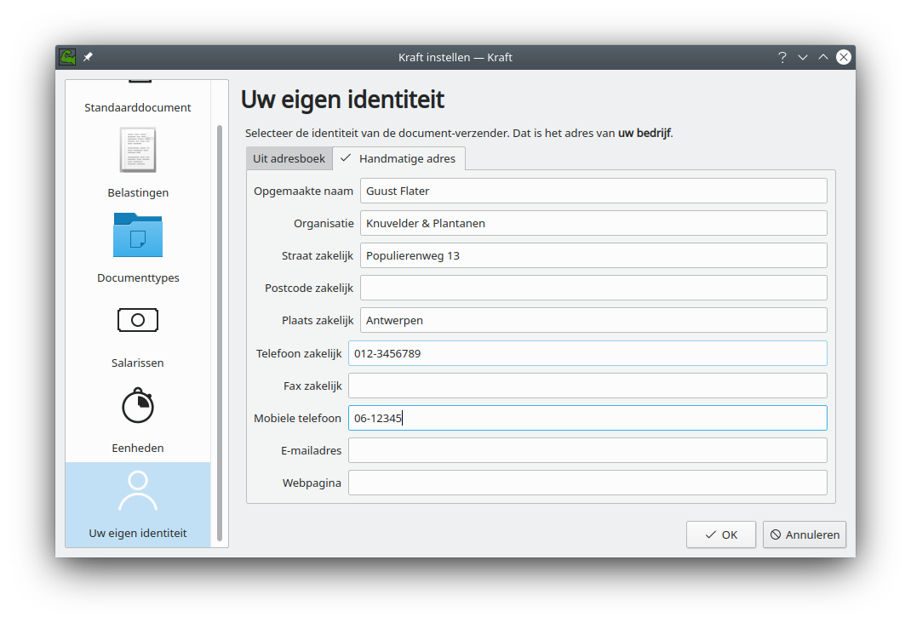
Na de basisconfiguratie, selecteert u . Hier kunt u Kraft correct voorbereiden zodat het op de juiste manier gebruikt kan worden.
In het dialoogvenster voor de instellingen hebben we de tabs:
*Standaarddocument *Belastingen *Dokumenttypes *Salarissen *Eenheden *Uw eigen identiteit
In elke tab is het mogelijk om voor uw specifieke geval realistische waarden in te voeren.
Document typen
Bij het eerste gebruik vindt u een lijst met verschillende documenttypes, zoals:
-
Acceptance of order (opdrachtbevestiging)
-
Delivery receipt (afleverbon)
-
Invoice (rekening)
-
Offer (offerte)
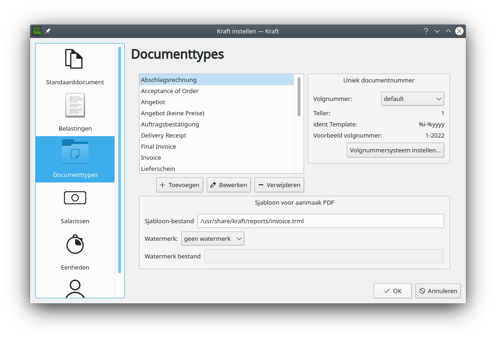
Vertaal deze typen naar uw eigen taal. U kan ook nieuwe documenten toevoegen en documenten verwijderen waarvan u denkt dat u die niet zal gebruiken.
Uniek documentnummer
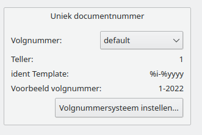 Elk document moet een uniek identificatie hebben die het document identificeert. Er mogen in Kraft geen twee documenten aanwezig zijn met dezelfde identificatie.
De opbouw van het identificatie is in Kraft instelbaar. Hiervoor heeft Kraft het concept van zogeheten volgnummers. Volgnummers worden gebruikt om de opbouw van het documentnummer te definiëren dat op elk document wordt geprint.
Alle documenten van een bepaald type hebben een identificatie die uit een één volgnummersysteem komen. Aan elk documenttype is een volgnummersysteem gekoppeld. Verschillende documenttypes kunnen hetzelfde volgnummersysteem gebruiken om hun identificatie uit te generen. Op die manier kunnen bijvoorbeeld de documenttypes Invoice (rekening) en Final Invoice (eindafrekening) nummers uit dezelfde volgnummersysteem gebruiken, terwijl ze in Kraft verschillende documenttypes zijn. Volgnummersystemen worden geïdentificeerd door hun naam. Gebruikers kunnen nieuwe volgnummersystemen creëren en deze bewerken door op de knop Volgnummersysteem bewerken… te klikken
De opbouw van de documentnummers worden gedefinieerd in een sjabloon waarin normale, vaste karakters maar ook enkele variabelen aanwezig kunnen zijn die worden vervangen door hun respectievelijke waarden bij de creatie van het document.
Elk documentnummer moet uniek zijn, en moet dus een teller hebben. Kraft kan twee soorten tellers gebruiken: Een type (variabele %i) wordt bij elk nieuw document verhoogt. De andere (variabele %n) wordt elke dag teruggezet en begint dus weer bij 1 op elke nieuwe dag. Behalve de teller kan extra informatie toegevoegd worden om een bruikbaar documentnummer te krijgen, zoals een constante tekst of gedeeltes van de datum.
Het standaard volgnummersysteem dat met Kraft wordt geleverd bevat het jaar, de maand en een serienummer. Op deze manier kunt u offertes of opdrachten van het vorige jaar vergelijken met die van dit jaar of van de maand April van het vorige jaar met de maand April van dit jaar en op die manier een indruk krijgen van de resultaten van uw bedrijf.
Zie de volgende tabel voor de beschikbare variabelen die gebruikt kunnen worden:
|
het jaar van de documentdatum. |
|
het jaar van de documentdatum (twee cijfers). |
|
het weeknummer van de documentdatum. |
|
het weeknummer van het documentdatum met een nul (twee cijfers). |
|
de dag van de week als getal van de documentdatum. |
|
de dag van de week als getal van het documentdatum met een nul (wee cijfers). |
|
de maand van het documentdatum als getal. |
|
de maand van het documentdatum als getal met een nul (twee cijfers). |
|
de ID van de klant in het kaddressbook |
|
het vertaalde doc type (offerte, rekening enz.) |
|
het contact id van de klant. |
|
de unieke teller (verplicht) |
|
de unieke dagteller (te combineren met de datum) |
In een volgnummersysteem-sjabloon moet naar keuze %i of %n aanwezig zijn, als dat niet het geval is dan wordt automatisch %i eraan toegevoegd.
Zowel %i als %n hebben numerieke waarden. Ze kunnen ook worden voorafgegaan door extra nullen. De length is afhankelijk van het aantal i’s of n’s die in het sjabloon voorkomen. Bijvoorbeeld, als u een dagelijkse teller met een lengte van drie cijfers en voorloop nullen wenst, dan moet u %nnn in de sjabloon plaatsen. Dit werkt tot een lengte van zes karakters.
Opmerking: het "ontwerp" van het volgnummersysteem en documentnummers is erg belangrijk. Door het flexibele systeem van sjablonen in Kraft kan niet ongeldige volgnummersystemen voorkomen. Dit is de verantwoordelijkheid van de gebruiker.
PDF Template
In the entry field Template File: the user can select a custom template for this specific document type.
If the file extension of the template file is .trml, the ReportLab based document converter is used. If the file extension is .gtmpl, Kraft automatically uses the Weasyprint based converter.
The ReportLab system for PDF creation is deprecated in Kraft. Please, for new templates, always use Grantlee- and Weasyprint based templates.
PDF Postprocessing
After Kraft has created the PDF document it is possible to merge the created PDF with static, customized PDFs created by the user. With that, it is easy to add a custom stationery with a logo to the resulting PDF ("Watermark").
The static PDFs should have the same page size as the generated documents. Keep in mind to use optimized images for logos etc. to not blow up the size of the result document.
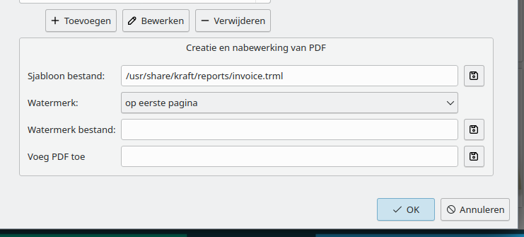
The watermark options are:
-
No Watermark: No watermark is created
-
On first page: The first page of the watermark.pdf is merged with the first page of the result document
-
Watermark on all pages: Merges the first page of the watermark PDF to all pages of the result document
-
alternating: For this, the watermark PDF needs to have three pages. The first page is merged to the first page of the result document, the second and third page are alternated merge to subsequent pages.
-
different first and last page: the PDF needs to have three pages. The first page is merged to the first page of the result document, the third page to the last, and the second to all page between first and last page.
If there is another static PDF document put into the entry field "Append PDF:", it is appended to the generated PDF. With that, Kraft will automatically add for example terms and conditions documents to the final document.
Belastingen
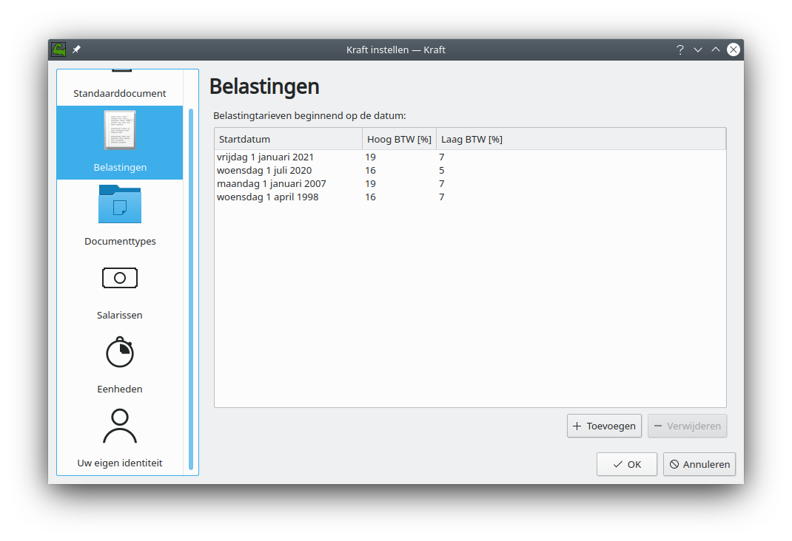 In veel landen zijn er twee BTW-tarieven voor verkochte producten.
Een hoog tarief en een laag tarief.
Geef hier de toepasselijke waarden op voor het hoge tarief en voor het lage tarief. Als het belastingtarief wijzigt, dan kunt u hier de startdatum met de nieuwe belastingtarieven toevoegen.
Salarissen
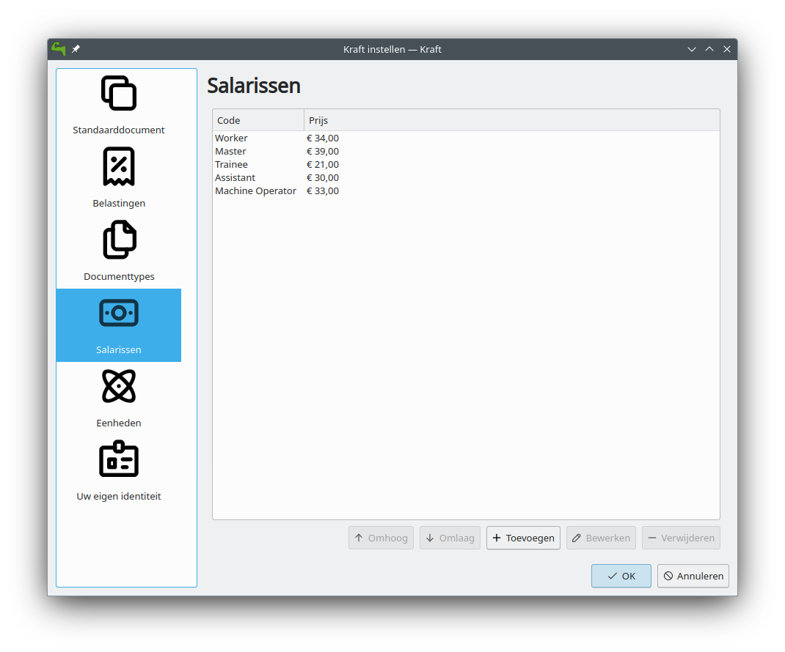 In Kraft is een lijst met salariskosten aanwezig. De items daarin worden in de sjablonen en in de berekeningen gebruikt.
Alle data kan bewerkt en aangepast worden in een configuratiedialoog dat u kunt bereiken via het menu-item 'voorkeuren', waar u ook nieuwe items kunt toevoegen .
Vergeet niet dat deze items later worden gebruikt in de documenten, het is daarom belangrijk dat u ze vertaalt naar uw eigen taal en dat u de correcte bedragen invult.
Eenheden
 In Kraft is een verzameling eenheden aanwezig. In het configuratiedialoog die u kunt bereiken via het menu-item 'Voorkeuren' kunt u de items die al aanwezig zijn bewerken, maar u kunt ook nieuwe items toevoegen.
In Kraft is een verzameling eenheden aanwezig. In het configuratiedialoog die u kunt bereiken via het menu-item 'Voorkeuren' kunt u de items die al aanwezig zijn bewerken, maar u kunt ook nieuwe items toevoegen.
Vergeet niet dat deze eenheden later worden gebruikt in de documenten, het is daarom belangrijk dat u ze vertaalt naar uw eigen taal.
Uw eigen identiteit
Controleer hier of de informatie die u heeft opgegeven tijdens de basisconfiguratie correct is voor het gebruik in de documenten.
Pas op: Als u de keuze heeft gemaakt om de informatie in Kaddressbook te gebruiken dan wordt de informatie die u handmatig toevoegt genegeerd.
Nadat we indien nodig de gewenste correcties in de configuratie hebben aangebracht, gaan we terug naar het hoofdvenster. Hier zien we drie tabs:
-
Documenten
-
Tijdlijn
-
Catalogi
Catalogi
Kraft gebruikt zogeheten Catalogi waarin sjablonen voor document items worden bewaard. Door de catalogi te gebruiken kan in het dagelijks gebruik het creëren van documenten significant worden versneld. Tijdens de creatie van nieuwe documenten, kunt u in de catalogi de items-sjablonen eenvoudig selecteren en naar het document verplaatsen.
Omdat sjablonen worden georganiseerd in mappen, kunnen hele documenten worden voorbereid en opgeborgen in verschillende mappen om later als documentsjabloon te worden gebruikt.
Uiteraard kunnen de items in de documenten worden bewerkt nadat ze in een catalogus zijn geselecteerd.
Kraft komt standaard met twee verschillende catalogi:
Material
Een catalogus met materialen die worden verkocht, met hun inkoopprijs, de winst en hun verkoopprijs.
en Standard Templates
Een catalogus met standaard recepten voor werkzaamheden zoals het planten van bomen.
Beide catalogussen kunnen mappen en submappen hebben om daar uw sjablonen in op te bergen . Eerst gaan we gegevens toevoegen aan de
Materiaalcatalogus
Een catalogus met materialen die worden verkocht, met hun inkoopprijs, de winst en hun verkoopprijs. Eerst gaan we nieuwe mappen en submappen toevoegen.
Nieuwe mappen
Selecteer met de muis de kolomnaam material, selecteer vervolgens in het contextmenu [Submap toevoegen]
en voeg een extra map zoals Bomen toe
Nieuwe submappen
We gaan nu submappen toevoegen aan de map Bomen. Selecteer met de muis de naam van de map waaraan u een submap wilt toevoegen, selecteer nu in het contextmenu [Submap toevoegen] en voeg extra submappen zoals Bladbomen en Naaldbomen toe. Nadat we extra mappen en submappen hebben toegevoegd om het materiaal onder te verdelen, gaan we het materiaal zelf toevoegen.
Nieuw sjabloon
Selecteer met de muis de naam van de submap of map waarin u materiaal wilt toevoegen. Selecteer de submap bladbomen en selecteer nu in het contextmenu nieuw sjabloon.
Voeg de nieuwe bomen kokosnoot-boom, appelboom en ananasboom toe.
Vul de prijs in die we hebben betaald.
Vul de winst in die we willen hebben op het materiaal.
En vul in per hoeveel ze verpakt zijn.
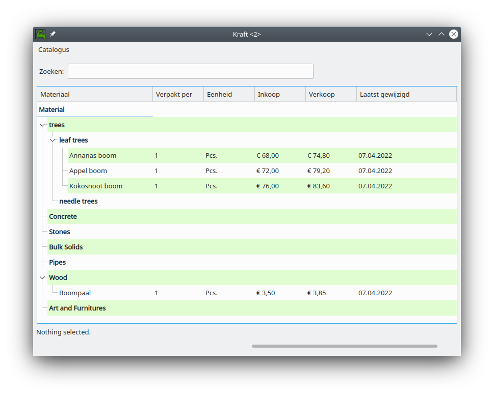 Hierna voegen we ook in de map 'Wood' een item toe voor 'boompaal' met zijn prijs voor later gebruik.
Nu gaan we naar:
Standard Templates
Dit is een catalogus met standaard recepten voor werkzaamheden zoals:
-
Bomen planten
-
Gras maaien
-
Transportkosten
-
Graszoden leggen
-
Graszaad zaaien
We gaan hier de standaard werkzaamheden voor het planten van een boom toevoegen.
Selecteer met de muis de naam van de map [Work] waar u de nieuwe sjabloon aan wilt toevoegen,
selecteer nu in het contextmenu Nieuw sjabloon
en voeg de extra sjablonen Boom planten en Gras maaien toe.
Nadat we de nieuwe sjabloon hebben aangemaakt, opent een venster met 4 tabs:
-
Sjabloon
-
Post arbeid
-
Vaste kosten
-
Materiaal
Eerst gaan we naar de tab:
Sjabloon
We geven hier de naam op van de nieuwe standaard sjabloon zoals Boom planten 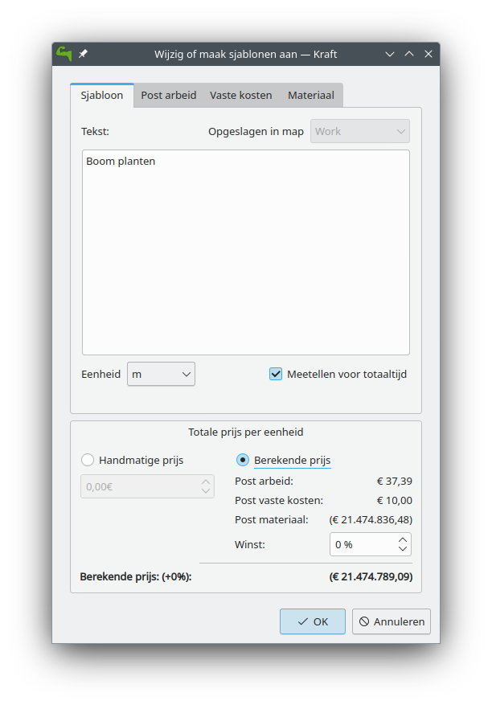
Pas op: wees voorzichtig, dit is de naam die later op de rekening komt.
we stellen hier in dat het per stuk is en dat de winst 8% is en dat het hoge BTW-tarief van toepassing is.
Post arbeid
We vullen hier een aantal werkzaamheden met hun tijd in:
Gat graven |
32 min. |
worker |
Boom plaatsen |
12 min. |
worker |
Gat opvullen |
17 min. |
worker |
Water geven |
5 min. |
worker |
De kosten voor een werknemer die we eerder hebben ingevuld worden nu gebruikt.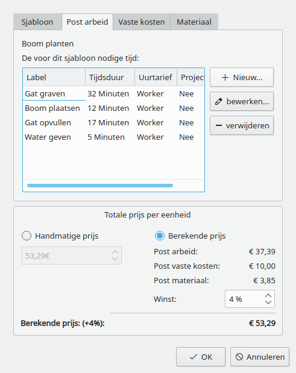
Opmerking: op de rekening zien we later alleen Boom planten, we zullen dan niet de onderdelen Gat graven, boom plaatsen, Gat opvullen, Water geven zien.
We gaan nu naar de tab:
Vaste kosten
en we vullen in:
Transportkosten |
35 euro |
1 pcs. |
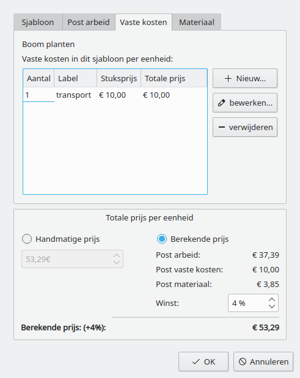
Hierna gaan we naar de tab:
Materiaal
Hier kiezen we volgende, waarna het venster [Materiaal toevoegen aan Berekening] opent voor de selectie van materiaal. We gaan dan naar de map 'wood' waar we de 'boompaal' selecteren.
1 |
boompaal |
3,5 euro |
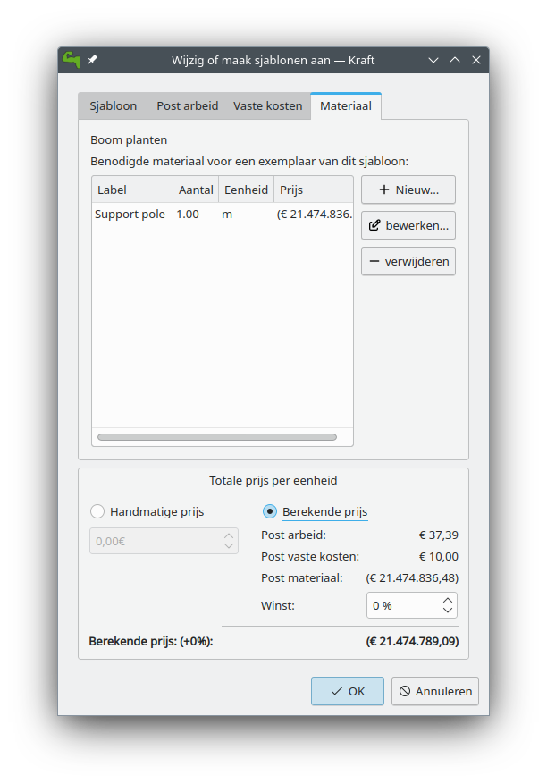
We gaan nu terug naar de eerste tab 'Sjabloon'
In de eerste tab [Sjabloon], kunnen we nu de totale kosten per eenheid zien.
Klik op OK om het resultaat op te slaan of op Annuleren om het resultaat te verwijderen.
We maken een tweede sjabloon 'Gras maaien'.
we vullen in Gras maaien, als eenheid kiezen we sm (square meter in het Engels) of m² (in het Nederlands), in de tweede tab vullen we in dat 3 min nodig hebben per vierkante meter.
Klik op OK om het resultaat op te slaan of op Annuleren om het resultaat te verwijderen.
We zijn nu klaar voor de eerste rekening.
De creatie van documenten
De eerste rekening
Open de tab Documenten
Klik op Nieuw document
Het document-venster [creation wizard] opent.
Selecteer in document type invoice (rekening).
Vul op het whiteboard een korte tekst over wat de rekening is, zoals: gras maaien en boom planten voor de heer Jansen .
Klik op Volgende
Selecteer in het volgende venster de naam en adres van de klant.
(Als de naam en adres niet aanwezig zijn, klik dan op nieuw contactpersoon of op contactpersoon bewerken als u het contact wilt bewerken)
Klik op OK.
Nu opent het venster document-items.
Dit venster heeft bovenaan 2 tabs en 3 knoppen:
-
Item toevoegen…,
-
Korting geven,
-
Document tonen.
Aan de linkerkant kunt u alle items zien die we op de rekening willen plaatsen, aan de rechterkant zien we de tekst van de koptekst, de totale prijs en de voettekst.
Als u op de tekst van de koptekst of van de voettekst aan de rechterkant klikt dan verandert het venster zodanig dat u de koptekst of de voettekst kan bewerken.
Pas de koptekst en de voettekst aan naar uw situatie, in de voettekst kan u bijvoorbeeld een tekst plaatsen als: Wij maken uw tuindroom werkelijkheid.
Klik op de knop Document tonen.
De rechter tab verandert en toont nu de eerder gemaakte sjablonen, we selecteren in de map 'Work', de submap 'Boom planten' en klikken op de knop met de naar links wijzende pijl aan de onderkant.
Een nieuw venster [Item van sjabloon creëren] opent.
Omdat we 2 bomen hebben geplant, gaan we naar het veld [invoegen] en veranderen dit naar 2 pcs (in het Nederlands stk).
Klik op OK om het resultaat op te slaan of op Annuleren om het resultaat te verwijderen.
Het venster sluit en we gaan terug naar het hoofdvenster.
We klikken opnieuw op Document tonen en selecteren deze keer gras maaien, we klikken opnieuw op de knop met de pijl, in het geopende venster stellen we in dat het grasveld 24 vierkante meter was.
Klik op OK om het resultaat op te slaan of op Annuleren om het resultaat te verwijderen.
We voegen nu handmatig een item toe door te klikken op de knop Item toevoegen… waarna het venster [Item creëren] opent.
Omdat we een speciale boom hebben geleverd, vullen we hier de naam van de speciale boom liguster in, in het veld invoegen vullen we het aantal van de speciale boom die we geleverd hebben in en de prijs daarvan.
Pas op: verlies niet uit het oog dat we in de catalogus een winst op de prijs van het materiaal kunnen toevoegen, in de rekening en in de offerte kunnen we geen winst aan de prijs van het materiaal toevoegen.
We hebben nu een rekening met 3 items.
Klik op OK om de rekening op te slaan of op Annuleren om de rekening te verwijderen.
We klikken op OK en slaan het resultaat op.
Uw eerste rekening is nu klaar voor verzending.
In het venster met documenten zien we onze eerste rekening, merk op dat dit document een documentnummer heeft die we aan de linkerkant zien.
Bovenaan het venster met alle rekeningen zien we de knop btn: [Print Document], waar we op klikken.
Van de rekening zal nu een PDF worden gemaakt die we op papier kunnen uitprinten of per email naar de klant kunnen versturen.
Hierna gaan we een offerte maken voor wat werk in een tuin.
Een offerte creëren
De klant heeft gevraagd of we een boom kunnen planten, we bieden 3 verschillende bomen aan die we kunnen planten.
Daarnaast hebben we gezien dat er een dode boom is, waarvoor we een aanbod doen om deze als extra werk te verwijderen. 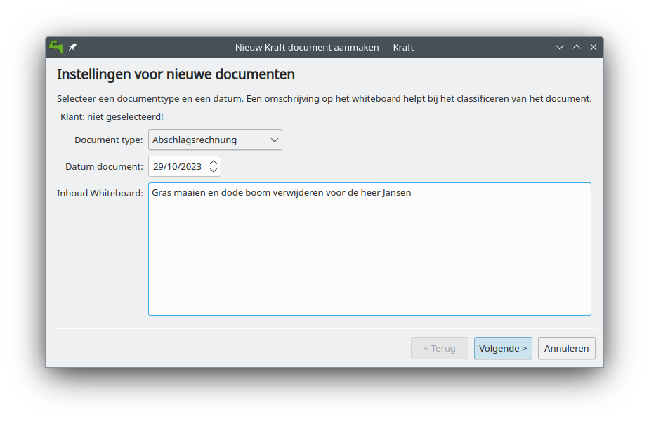
De totale prijs willen we exclusief de prijs voor de verwijdering van de dode boom en alleen de prijs van een boom en niet van drie bomen.
Open opnieuw de tab Documenten.
Klik op Nieuw document
Het document-venster [creation wizard] opent.
Selecteer in btn: [document type]>offer.
Vul op het whiteboard een korte tekst over waarover de offerte gaat, zoals: een boom planten en verwijding van dode boom .
Klik op Volgende
Selecteer in het volgende venster de naam en adres van de klant.
(Als de naam en adres niet aanwezig zijn, klik dan op nieuw contactpersoon of op contactpersoon bewerken als u het contact wilt bewerken)
Klik op OK.
Nu opent het venster [Document bewerken].
Dit venster heeft bovenaan 2 tabs en 3 knoppen:
-
Item toevoegen…,
-
Korting geven,
-
Document tonen.
Klik op de knop Document tonen.
De rechter tab verandert en toont nu de eerder gemaakte sjablonen, we selecteren in de map 'Work', de submap 'Boom planten' en klikken op de knop met de naar links wijzende pijl aan de onderkant.
Een nieuw venster [Item van sjabloon creëren] opent.
Omdat we 1 boom willen planten, gaan we naar het veld [invoegen] en houden dit op 1 pcs (in het Nederlands stk).
Klik op OK om het resultaat op te slaan of op Annuleren om het resultaat te verwijderen.
Het venster sluit en we gaan terug naar het hoofdvenster.
We klikken op de knop Document tonen en selecteren deze keer de catalogus Material.
De material-catalogus opent, en we kunnen in de map Bomen de submap Bladbomen selecteren waar we de appelboom selecteren die we eerder hebben gemaakt.
Klik op OK om het resultaat op te slaan of op Annuleren om het resultaat te verwijderen.
Het venster sluit en we gaan terug naar het hoofdvenster.
We voegen nu handmatig een item toe door te klikken op de knop `Item toevoegen…'.
Het venster [Nieuw item aanmaken] opent.
We willen dat de klant een keuze kan maken tussen een appelboom, een perenboom en de liguster.
Daarom gaan we een perenboom handmatig toevoegen.
We klikken op de knop Item toevoegen… waarna het venster [Item creëren] opent.
We vullen hier de naam van de boom Perenboom in, en in veld invoegen vullen we het aantal van de speciale bomen in die we kunnen leveren en de prijs daarvan.
We willen dit aan de materiaalcatalogus toevoegen voor toekomstig gebruik, daarom selecteren we ook [Dit item als sjabloon bewaren voor latere documenten] en selecteren we in opslaan in map 'bomen'.
Klik op OK om het resultaat op te slaan of op Annuleren om het resultaat te verwijderen.
We doen dit ook voor de liguster.
We hebben nu 3 items met bomen in de offerte.
En tenslotte voegen we een item toe met 'boom verwijderen' met 0,5 uur voor 32 euro.
Links van het item zien we 2 knoppen:
Een knop met een vlag en een knop met wat lijkt op een pagina.
We selecteren de bovenste knop met de pagina waarna een contextmenu opent met de items:
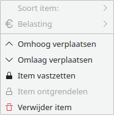
[ Soort item]->[Normaal] [Soort item]>[Alternatief] [Soort item]>[Op verzoek] [Belasting] [Omhoog verplaatsen] [Omlaag verplaatsen] [Item vastzetten] [Item ontgrendelen] [Verwijder item]
We selecteren hier [Soort item] en veranderen dit voor perenboom van [normaal] naar [alternatief].
We doen dit ook voor [liguster] en voor [Boom verwijderen] veranderen we dit van [normaal] naar [Op verzoek].
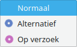
Klik op OK om het resultaat op te slaan of op Annuleren om het resultaat te verwijderen.
We willen het resultaat bekijken en daarom klikken we op de knop Document tonen.
We zien nu dat de prijs voor de perenboom, de liguster en het verwijderen van de boom niet is gebruikt voor de totale prijs. Als we tevreden zijn met het resultaat, dan klikken we op de knop OK waarna we klikken op de knop Document afdrukken voor het maken van een PDF die we kunnen uitprinten of naar de klant kunnen sturen.
Na uw eerste rekening is nu ook uw eerste offerte klaar voor verzending.
Een Acceptance of order (opdrachtbevestiging) aanmaken
Het documenttype "Acceptance of Order" (opdrachtbevestiging) wordt verstuurd als vervolg op een offerte.
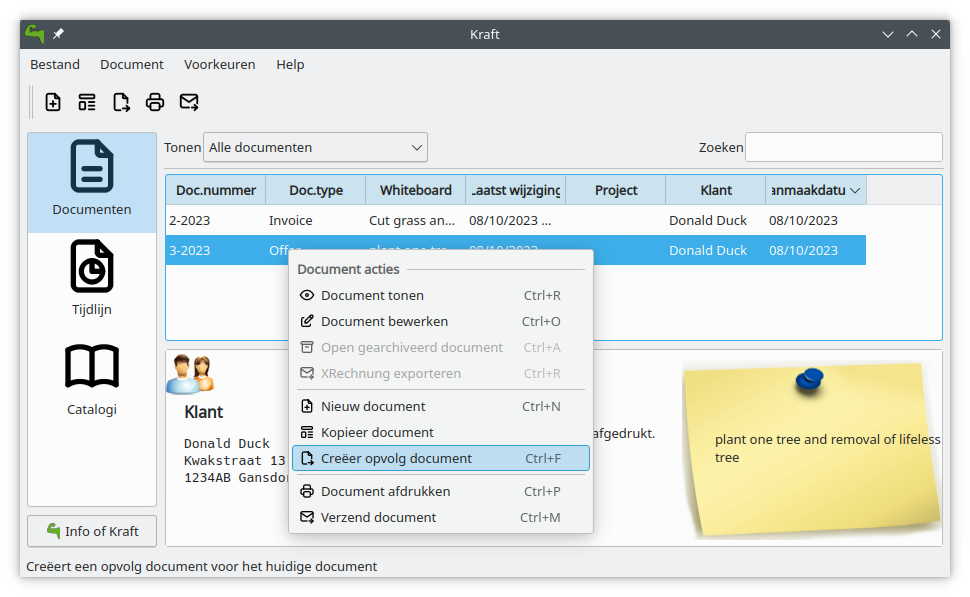
Als een klant een verzoek heeft gemaakt, dan zullen we een offer (offerte) sturen waarin we beschrijven welke items we zullen gaan leveren. Hopelijk zal de klant een order geven voor het werk.
Het is een goede gewoonte om op de order te reageren met een "Acceptance of order" (opdrachtbevestiging) waarin we alle items beschrijven die we zullen gaan leveren. We kunnen de "Acceptance of order" op dezelfde manier maken als waarmee we de invoice (rekening) of de offer (offerte)hebben gemaakt door elk item te selecteren en het aantal te leveren aan te passen. Dit kost tijd en we kunnen fouten maken door items te vergeten of een incorrect aantal in te vullen.
U kunt dit sneller doen door de offer (offerte) in de lijst te selecteren en vervolgens Creëer opvolg document in het context menu of in het hoofdmenu te selecteren.
We hebben nu als documenttype de keuze uit:
[Acceptance of order] [Invoice] [Partial Invoice] [final Invoice] [Progress Payment Invoice]
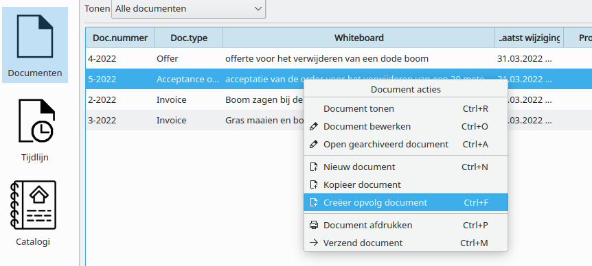
We selecteren nu "Acceptance of order". We hebben nu een kopie van de offerte als een Acceptance of order (vergeet niet om de alternatief items en de op verzoek items aan te passen.)
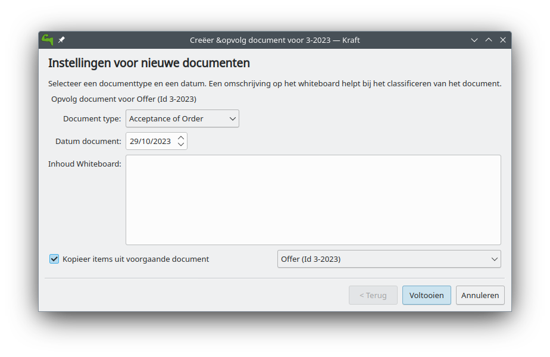
U kunt dit ook doen voor de creatie van de invoice (rekening) als opvolging van de opdrachtbevestiging. Elk documenttype heeft een specifieke lijst met opvolg-documenten. Het is een goede gewoonte om op de rekening precies te omschrijven wat is geleverd.
Kraft naar wens aanpassen
Een groot gedeelte van de grafische interface van Kraft kan aangepast worden, met name de uitvoer die het genereert.
Documentuitvoer aanpassen
Om PDF’s te creëren, moet een sjabloon worden gevuld met de document data die in Kraft is gecreëerd. De sjabloon definieert hoe de het resulterende document eruit komt te zien, d.w.z de ingestelde lettertypes, de plaats van de elementen en dergelijke.
Het bestand dat is samengesteld uit een combinatie van de data en de sjabloon wordt geconverteerd naar een PDF met een speciaal document creation script. Dit alles wordt automatisch door Kraft gestart als een document uitgeprint moet worden.
In Kraft kan elk documenttype zijn eigen sjabloon hebben voor de creatie van een PDF. Welk wordt gebruikt kan u instellen in het instellingsvenster voor documenttypes.
WeasyPrint Documenten
|
Noot
|
Kraft still ships with the old ReportLab based converter, but that will be deprecated the future. The WeasyPrint based system is the future. It is a recommended to port existing templates. |
With WeasyPrint Kraft uses a very powerful generator that makes it very easy to create highly customized documents with great quality.
WeasyPrint converts a html file to PDF. It is integrating a cascading stylesheet (CSS) file which has a huge impact on the PDF document’s look.
The html- and CSS input file for WeasyPrint is built from the Kraft template file.
To enable the use of WeasyPrint for a document type in Kraft, simply create a weasyprint compatible template file and save it with the extension .gtmpl. Based on the file extension Kraft automatically uses WeasyPrint and the Grantlee templating engine for rendering.
From version 0.95 on Kraft ships with an example template in the Grantlee- and WeasyPrint format. It can be found at /usr/share/kraft/reports/invoice.gtmpl or online on Github. An example CSS file kraft.css (on Github) is shipped as a good starting point for adoption.
Sjabloon variabelen
To generate the PDF, Kraft has to transfer data from the document you have been working on to the input file that is processed to a PDF. For that, Kraft uses a text template in which Kraft replaces variables with the actual values.
For example, the tag {{ doc.doctype }} is replaced with the current document type during the generating process.
De syntax is gebaseerd op de Django syntax voor sjablonen zoals het beschreven wordt in de documentatie.
EPC QR Code
Kraft supports the EPC QR Code, also known as Giro Code with Weasyprint based PDF generation.
To use the giro code, the bank account information has to be added to own identity settings dialog in Kraft. The giro code is current only generated for documents with the document type Rechnung.
To include the generated EPC QR Code into the PDF document, the weasyprint template needs to contain a snippet like this:
{%if doc.isInvoice and epcqrcode.valid %}
<p class="epcqrcode">
<img class="epc" src="file://{{ epcqrcode.svgfilename }}" alt="EPC QR Code" />
Dieser QR Code ermöglicht einfaches, sicheres und schnelles Begleichen dieser Rechnung via GiroPay:
Diesen Code mit dem Smartphone scannen und Überweisung per Banking App aufgeben.
</p>
{% endif %}Menu’s en sneltoetsen
Hoofdvenster van het programma
Het menu Bestand
[Bestand]>[Afsluiten] [Ctrl]+[Q] Sluit het programma af.
Het document-menu
[Document]>[Document tonen] [Ctrl]+[R] Opent een venster met het geselecteerde document om deze te tonen.
[Document]>[Document bewerken] [Ctrl+O] Opent een venster met het geselecteerde document voor bewerking.
[Document]>[Open gearchiveerd document] [Ctrl]+[A] Opent een gearchiveerd document.
[Document]>[Nieuw document] Opent een venster met een wizard voor de creatie van een nieuw client-document.
[Document]>[Kopieer Document] Maakt een kopie van het geselecteerde client-document naar een nieuw client-document Deze kan bij een andere klant horen of zelfs een ander documenttype zijn.
[Document]>[Creëer een opvolg Document] Kopieert de inhoud van een offerte naar een order-acceptatie of een rekening.
[Document]>[Document afdrukken] Creëert een PDF van het geselecteerde client-document zodat u deze kan emaillen of uitprinten.
[Document]>[Verzend document] [Ctrl]+[M] Verzend een document per email.
Het instellingen-menu
[Voorkeuren]>[Tag sjabloon bewerken] [Ctrl]+[E] Opent een venster waarin u tags (zoals work,material, plants of discounts) kunt toevoegen, bewerken of vertalen.
[Voorkeuren]>[De initiële aanmaak opnieuw uitvoeren] [Ctrl+R] Voert de basisconfiguratie opnieuw uit. Hierna is een herstart van Kraft nodig.
[Voorkeuren]>[Werkbalken] Hier kunt u beslissen of de `hoofdwerkbalk` en de werkbalk `Document acties` worden getoond.
[Voorkeuren]>[Instellingen] [Ctrl]+[Shft]+[,] Hier kunt u Kraft instellen.
Het document-bewerkingsvenster.
Het contextmenu
[Context]>[Soort item] wijzigt de status van dit item tussen * Normaal * Alternatief * Op verzoek
[Context]>[Belasting] Lijkt niet te werken.
[Context]>[Omhoog verplaatsen] Verplaatst dit item een plaats omhoog in het document.
[Context]>[Omlaag verplaatsen] Verplaatst dit item een plaats omlaag in het document.
[Context]>[Item vastzetten] Het is niet duidelijk wat het doet.
[Context]>[Item ontgrendelen] Het is niet duidelijk wat het doet.
[Context]>[Verwijder item] Verwijdert dit item uit het document.
Geavanceerde onderwerpen
Dit hoofdstuk beschrijft geavanceerde onderwerpen rond het gebruik van Kraft. Daarbij wordt enige kennis van Linux veronderstelt, en het is verstandig om de instellingen door ervaren Linux-beheerders uit te laten voeren en deze vervolgens zorgvuldig en uitgebreid te testen.
Kraft gemeenschappelijk gebruiken.
Kraft kan gemeenschappelijk in een gedistribueerde omgeving gebruikt worden. Dat houd in dat meerdere gebruikers op hun eigen desktop met hun eigen Kraft instance met dezelfde data kunnen werken.
De hele situatie is aan verandering onderhevig, omdat Kraft in de nabije toekomst ownCloud als privé Cloud voor de opslag van de data zal gebruiken.
Database en Document-pool gezamenlijk gebruiken
De eenvoudigste situatie is als twee of meer Kraft-gebruikers de database gemeenschappelijk gebruiken en toegang tot dezelfde pool van PDF-documenten op de harde schijf hebben. Om het eenvoudig te houden, worden hier de situatie met twee gebruikers beschreven.
Een veelvoorkomende situatie kan als volgt zijn: twee verschillende Linux gebruikers willen Kraft gebruiken. Ze hebben beide hun eigen computer en werken in hetzelfde netwerk. Dit voorbeeld beschrijft een situatie met een hoofdkantoor die Kraft in de normale modus gebruiken, en een Notebook met Kraft, die in de read-only modus is om de documenten te bekijken, de catalogus te raadplegen en dergelijke.
Daarvoor is het volgende vereist:
-
Als Database-Backend wordt MySQL of MariaDB gebruikt. Sqlite is niet mogelijk.
-
De Database is met de gebruiker MySQL vanuit beide computers bereikbaar.
-
De map waarin de documenten worden opgeslagen, wordt voor beide computers bereikbaar zijn (shared).
Pas op: Er is geen beveiliging tegen het feit dat beide gebruikers tegelijk hetzelfde document kunnen bewerken. Om dat dit gevaarlijk is en tot onvoorziene resultaten kan leiden, raden wij aan om Kraft buiten het kantoor alleen in de readonly-modus te gebruiken. Deze readonly-modus wordt met de parameter -r ingeschakeld.
De database gezamenlijk gebruiken
De Database-server moet op de hoofdmachine geïnstalleerd zijn, of het moet op een gespecialiseerd apparaat zoals een NAS geïnstalleerd zijn. De snelheid van het netwerk beïnvloed de bruikbaarheid natuurlijk enorm.
Howtos voor het gebruik van MySQL zijn op het internet te vinden.
De map met de document Pool delen (sharen)
Kraft schrijft de gegenereerde PDF’s in een lokale map. Welke dat is, kunt u instellen in het config-bestand van Kraft. Het config-bestand moet voor alle exemplaren van Kraft correct ingesteld zijn.
U kunt deze vinden in de thuismap van de gebruiker met de relatieve pad .config/kraftrc. Daarin moet de volgende tekst voorkomen:
[reporting]
PdfOutputDir=/data/space/kraftdoc/pdfEr zijn verschillende manieren om de map te delen (sharen), bijvoorbeeld een NFS of een SMB Server. Het is belangrijk dat gebruikers van beide machines toegang hebben tot deze bestanden. De hoofdgebruiker heeft lees- en schrijfrechten nodig, de read-only gebruiker heeft voor de bestanden alleen lees-rechten nodig.
Een aanbevolen opstelling is een NFS Share met autofs, die op de hoofdmachine is ingesteld. Om de toegang tot de bestanden te beheren, raden wij aan om een gebruikersgroep te creëren waarin u de toegangsrechten kan beheren.
Kraft in read-only modus
Om Kraft in de read-only modus te starten, moet het programma met de volgende parameter -r gestart worden.
Gebruik van XRechnung
Kraft ondersteund het gebruik van de XRechnung standaard. Dat is een digitaal formaat voor electronische rekeningen, en als wet ingevoerd in Duitsland wat een EU richtlijn volgt. De XRechnung is een XML-bestandsformaat ontworpen voor dat doel.
Om de XRechnung Export productief te gebruiken, is nog een beetje handwerk in Kraft nodig. Kraft creëert het XML-bestand aan de hand van een sjabloon, vergelijkbaar met de normale PDF documenten. Dit houdt in dat het een sjabloon laadt wat statische elementen bevat (b.v. het adres van het bedrijf) die niet veranderen tussen de verschillende rekeningen. De dynamische elementen (data over de klant, items enz.) worden in het sjabloon geplaatst tijdens de stap van het generen.
Om correcte XRechnung-bestanden te generen voor het desbetreffende bedrijf, moet de gebruiker het sjabloonbestand handmatig aanpassen aan de eisen van het bedrijf. Merk op dat u dat maar eenmalig hoeft te doen en dat het niet moeilijk is voor iemand met een beetje computerervaring (Basiskennis van XML is gewenst).
Om het bestand aan te passen aan de eisen van het bedrijf, kunt u het beste beginnen met het voorbeeld XRechnung-bestand. U moet het downloaden en vervolgens opslaan op een plek waar u het kan bewerken. Open het in een normale tekstverwerker, zoals Kate.
Bestudeer nauwkeurig het bestand zonder dat u afgeschrikt wordt door het XML-opmaak. Alle user strings (d.w.z. bedrijfsnaam, adres en dergelijke) zijn specifiek voor de gebruiker en moeten daarom overeenkomstig vervangen worden. Zoek de details over de opmaak hier op voor een beter begrip van de betekenis van de velden.
Zorg ervoor dat u de correcte XML-opmaak niet verstoort en wijzig niet de locatie van waar {{ template_name }} is gebruikt.
Nadat het bestand is aangepast aan de wensen, opent u het dialoogvenster voor de instellingen van Kraft en voer de bestandsnaam in het invoerveld voor het XRechnung Sjabloonbestand in de pagina voor document-standaarden.
Na deze stap zal het menu item Export XRechung een dialoogvenster openen voor het ingeven van het bestandsnaam waarmee de XRechnung rekening wordt opgeslagen.
Dit bestand kan nu verzonden worden naar de ontvanger van de rekening.
|
Noot
|
Er zijn validators voor rekeningen in het XRechnung formaat op het internet te vinden. Het is verstandig om het bestandsformaat van de XRechnung dat uit Kraft is geëxporteerd te laten valideren. |
Changing the Locale
If it is needed that Kraft runs under a different locale than the actual desktop environment, this can be achieved by setting the desired locale in the start file of Kraft.
On the linux desktop, apps are usually started through a so called desktop file. It contains the information how the Kraft binary is started if user clicks on the icon on the desktop or in the start menu.
The desktop file can usually be found in /usr/share/applications/de.volle-kraft-voraus.kraft.desktop.
It contains the line ` Exec=kraft %u ` which starts the application with the default locale.
Changing it to ` Exec=env LANG=de_DE.UTF-8 kraft %u ` would change that to run in the German locale for example, independent from the desktop environment location.
Dankbetuigingen en licentie
Auteursrecht software en documentatie 2004-2022 Klaas Freitag
Documentatie auteursrecht 2020 Ronald Stroethoff